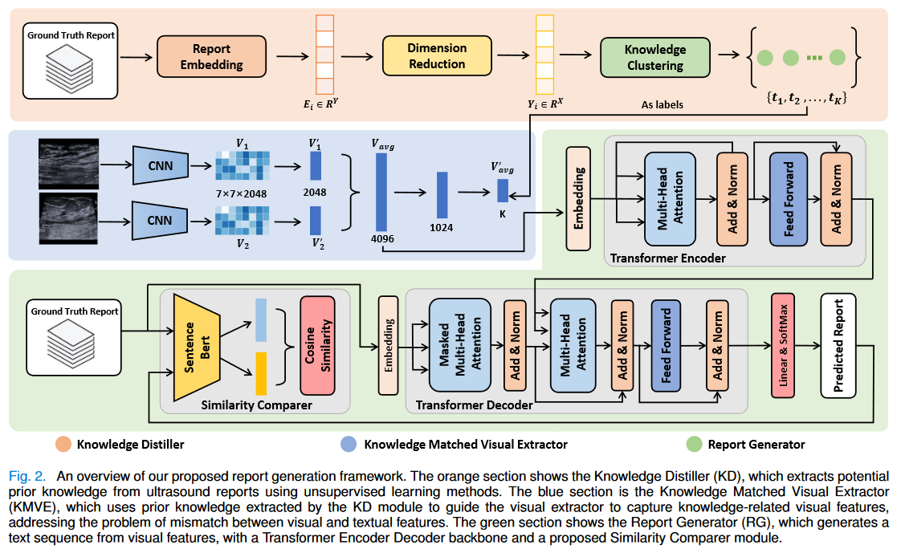
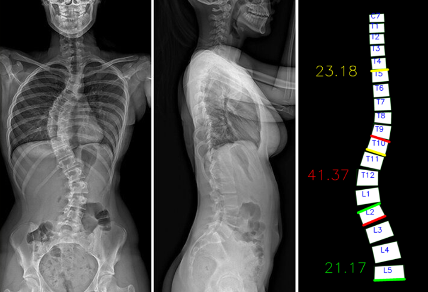

Medical Report Generation
- This project focuses on exploring techniques for generating medical reports from imaging data.
- Project worked at Shenzhen Institutes of Advanced Technology and Techinical University of Munich

Reconstruct 3D CT from X-rays
- This project focuses on exploring techniques for reconstructing 3D CT images from 2D X-rays.
- Project worked at Shenzhen Institutes of Advanced Technology, Chinese Academy of Sciences.

Spine Cobb Angle Measurement
- Automatic and semi-automatic Cobb angle measurement tool for spinal X-ray images (coronal & sagittal planes), implemented with OpenCV + NumPy.
- Project worked at Shenzhen Institutes of Advanced Technology, Chinese Academy of Sciences.

Text to Image Generation
- Using GAN to generate ultrasound scan from ultrasound repots.
- Project worked at Shenzhen Institutes of Advanced Technology, Chinese Academy of Sciences.